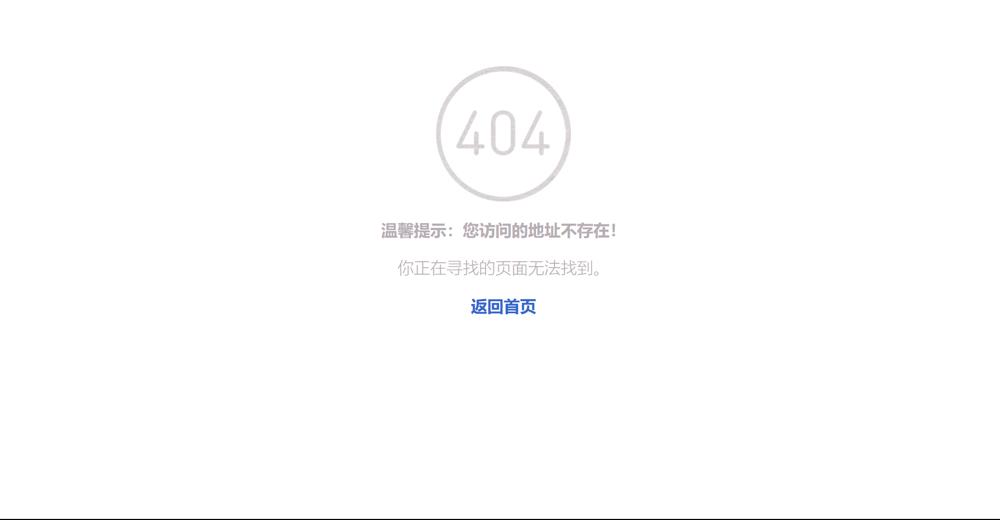

博客生活，记录点滴
1 项目简介
本课程的结课网站采用了纯HTML，CSS，Javascript构建一个静态页面，网页选择的主题一个简单的博客系统，在该网页中有首页页面、博客内容页面、注册页面、登录页面和404页面五个内容模块。
2 开发过程
2.1 首页
2.1.1 首页HTML结构设计和CSS样式设计
HTML 结构设计
- 使用 div 元素创建了一个导航栏和内容区域的容器。
- 导航栏部分使用了 div 元素和 ul 元素创建了一个水平的导航栏，包含了一系列的导航链接。
- 内容区域分为三列，使用了 div 元素和 img 元素创建了博客列表的展示区域和侧边栏。
CSS 样式设计
- 使用了 Bootstrap 框架的样式文件 bootstrap.min.css，提供了导航栏和容器的基本样式。
- 自定义的样式文件 main.css 对导航栏、博客列表、侧边栏等元素进行了进一步的样式定义。
- 导航栏链接在鼠标悬停时变化颜色，使用了 :hover 伪类。
- 博客列表中的图片设置了最大宽度和圆角边框。
- 侧边栏和博客列表中的一些元素使用了背景颜色和圆角边框来增加视觉效果。
- 使用了一些媒体查询和响应式设计，使得页面在不同屏幕尺寸下能够适应并显示不同的布局。
2.1.2 首页预览图
2.2 博客界面
2.2.1 HTML结构设计和CSS样式设计
HTML 结构设计
页面主体内容位于 body 标签内，分为两个主要部分：
- 顶部导航栏（<< div class="navbar" >）：包含首页（My Blog）、全部分类以及导航链接（全部分类、语言、数据结构等）和登陆/注册链接。
- 博客内容部分（< div class="container" >）：包含一个左侧内容栏（博客标题、发布者信息、标签等）和一个右侧侧边栏（搜索框、广告、推荐阅读等）。
CSS 样式设计
- 使用了 Bootstrap 框架的样式文件 bootstrap.min.css，提供了导航栏和容器的基本样式。
- 自定义的样式文件 main.css 对导航栏、博客内容、侧边栏等元素进行了进一步的样式定义。
- 导航栏链接的鼠标悬停效果：通过:hover伪类改变链接的颜色，提升用户体验。
- 设置图片的最大宽度和圆角边框，使图片在博客列表中更美观。
- 侧边栏和博客列表中的一些元素样式：添加背景颜色和圆角边框来增加视觉效果。
- 媒体查询和响应式设计：通过媒体查询和响应式设计，使页面在不同屏幕尺寸下能够适应并显示不同的布局
2.2.2 博客内容界面预览图
2.3 注册与登录界面
2.3.1 注册与登录 HTML结构设计和JS函数设计
HTML 结构设计
- 导航栏部分使用了 a 元素生成链接，方便用户返回首页
- 内容部分使用了 div 元素和 input 元素创建了两个表单，注册表单和登录表单
JS 函数设计
- 使用 JS 生成了交换注册与登录表单的函数
2.3.2 注册与登录预览图
2.4 404界面
2.4.1 404界面HTML结构设计和CSS样式设计
HTML 结构设计
- 这是一个自定义的404页面，它相对简单，包含一个居中的容器（ div id="wrapper"），在容器中有一张图片（ img ）和一些文本内容（ h1 和 p 标签）。
CSS 样式设计
- 去除默认样式：通过设置border: 0;，去除链接、字段集（fieldset）和图片的默认边框样式。
- 链接样式：定义了链接（ a ）的颜色、文本装饰（去除下划线）、透明度和鼠标悬停样式。
- 容器样式（#wrapper）：居中显示容器，设置容器的宽度和边距。
- 响应式设计：通过媒体查询（@media）定义了在不同屏幕尺寸下的样式变化，以实现页面的响应式布局。在小屏幕设备上，容器的宽度变为280px，并稍微调整了边距和对齐方式。
2.4.2 404界面预览图
3 开发过程中遇到的问题
3.1 问题一：如何实现页面的响应式设计？
3.1.1 问题描述
在开发过程中，我发现页面在不同屏幕尺寸下的显示效果不同，有些元素的位置和大小也发生了变化。为了解决这个问题，我需要对页面进行响应式设计，使得页面在不同屏幕尺寸下能够适应并显示不同的布局。
3.1.2 解决方案
为了实现页面的响应式设计，我使用了 Bootstrap 框架的栅格系统。栅格系统是一套响应式的网格布局系统，通过将页面水平划分为 12 列，可以在不同屏幕尺寸下显示不同的布局。在开发过程中，我使用了 Bootstrap 框架的样式文件 bootstrap.min.css，提供了导航栏和容器的基本样式。同时，我还自定义了样式文件 main.css，对导航栏、博客内容、侧边栏等元素进行了进一步的样式定义。
3.2 问题二：如何实现页面的跳转？
3.2.1 问题描述
在开发过程中，我发现页面的跳转是一个很重要的功能，但是我不知道如何实现页面的跳转。为了解决这个问题，我需要学习如何使用 a 元素生成链接，以及如何使用 JS 函数实现页面的跳转。
3.2.2 解决方案
为了实现页面的跳转，我使用了 a 元素生成链接，方便用户返回首页。同时，我还使用了 JS 函数实现了页面的跳转，通过 JS 函数，我可以在不同页面之间进行跳转。
3.3 问题三：如何实现页面的动态效果？
3.3.1 问题描述
在开发过程中，我发现页面的动态效果是一个很重要的功能，但是我不知道如何实现页面的动态效果。为了解决这个问题，我需要学习如何使用 JS 函数实现页面的动态效果。
3.3.2 解决方案
为了实现页面的动态效果，我使用了 JS 函数实现了页面的动态效果，通过 JS 函数，我可以在不同页面之间进行跳转。
4 总结
概述：
该项目包括首页、博客内容页面以及注册与登录页面。通过这个项目，我熟悉了前端开发的基本知识和技术，并且学会了如何将它们应用于实际项目中。
项目目标：
该项目的目标是创建一个简单而具有吸引力的博客网站，使用户能够浏览博客文章、注册账户并登录。项目要求页面具有良好的可读性和可用性，并且在不同设备上都能够良好地显示和响应。
技术选择：
为了实现这个目标，我选择使用HTML、CSS和JavaScript作为开发工具。HTML用于构建页面的结构，CSS用于样式化页面，JavaScript用于添加交互和动态功能。
页面设计和开发：
-
首页：
- 首页是博客网站的主要入口点，它展示了最新的博客文章列表。
- 使用HTML构建了页面的基本结构，包括标题、导航栏、博客文章列表等。
- 使用CSS添加样式，使页面具有吸引力，如选择适当的颜色、字体和布局。
- 使用JavaScript添加动态效果，例如实现图片轮播、悬停特效等。
-
博客内容页面：
- 博客内容页面展示了单篇博客文章的详细内容。
- 使用HTML创建页面结构，包括文章标题、作者、日期等。
- 使用CSS对页面进行样式化，以提高可读性和视觉吸引力。
- 使用JavaScript实现一些交互功能，例如评论功能、点赞功能等。
-
注册与登录页面：
- 注册与登录页面允许用户创建账户并进行登录。
- 使用HTML构建表单，以便用户输入必要的信息。
- 使用CSS美化表单，使其具有良好的可用性和易用性。
- 使用JavaScript验证用户输入，并在必要时提供错误提示。
-
404页面：
- 当用户进入到不可进入的页面时，会展示404页面
- 使用HTML构建基本的404页面，并引导用户返回
- 使用CSS美化样式。
项目总结：
通过完成这个静态网页博客项目，我获得了以下几点收获：
- 对HTML、CSS和JavaScript的基本语法和用法有了更深入的了解。
- 学会了构建网页的基本结构，以及如何应用样式和交互功能。
- 熟悉了网页设计的基本原则，如布局、颜色选择和字体使用等。
- 掌握了一些常用的前端开发技巧和技术，如响应式设计、表单验证等。
在项目开发过程中，我也面临了一些挑战和问题：
- 响应式设计：确保页面在不同设备上都能够良好地显示和响应是一个挑战。我通过使用CSS媒体查询和弹性布局等技术来解决这个问题。
- 浏览器兼容性：不同浏览器对网页的渲染方式存在差异，因此我需要进行一些兼容性测试和调整，以确保在主流浏览器上都能正常运行。
未来改进的方向：
虽然这个项目已经完成了基本的功能，但还有一些改进的空间：
- 添加更多的交互功能，如搜索功能、标签分类等，以提升用户体验。
- 进一步优化页面加载速度，提高网站的性能。
- 引入后端技术，实现博客文章的动态发布和用户管理等功能。
总结：
通过这个静态网页博客项目，我不仅学到了HTML、CSS和JavaScript的基础知识，还锻炼了解决问题和提高用户体验的能力。我相信这些技能对我未来的前端开发工作将非常有帮助。这个项目也激发了我进一步学习和探索Web开发的兴趣，我期待在未来的项目中继续提升自己的技术水平。